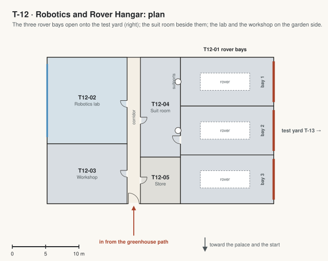

T-12 · Robotics and Rover Hangar
Where the rovers live and students build robots, next to the test yard (T-13); a link from the Garden of Primes. The rovers dock to suitports, so nobody walks outside without a suit room.

| Code | Room | What it is for | Size |
|---|---|---|---|
| T12-01 | Rover bays | Three bays for the campus rovers, each with a big door onto the test yard; the rovers dock to the suit room's suitports. | 310 m² |
| T12-02 | Robotics lab | Benches where students build robots and small rovers: tools, parts drawers, a test table. Also: Robotics club. | 160 m² |
| T12-03 | Workshop | 3D printers, a laser cutter, a lathe and a mill. | 110 m² |
| T12-04 | Suit room | The EVA suits on their racks and an airlock out onto the surface, next to the bays. | 90 m² |
| T12-05 | Parts store | Spares for the rovers and the robots. | 42 m² |